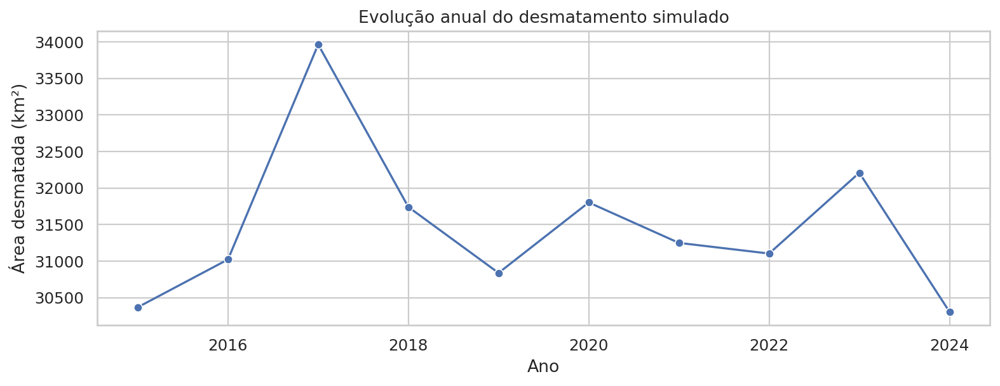
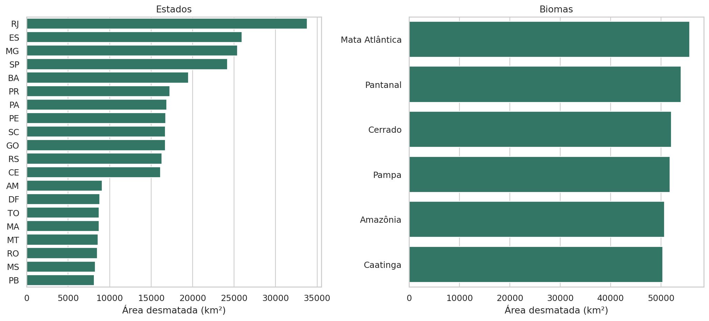
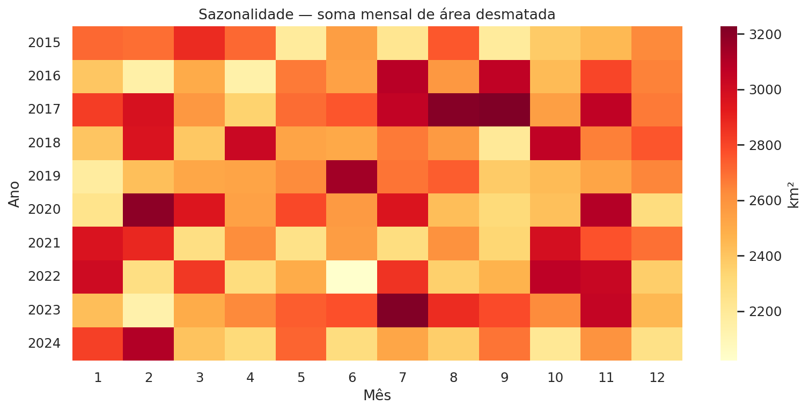
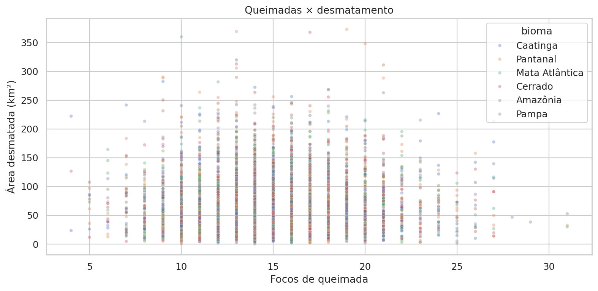
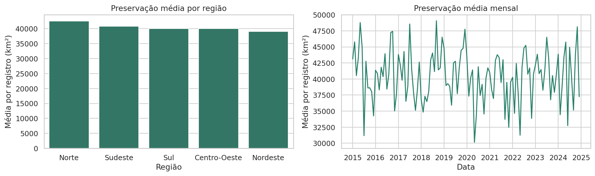

O problema e a base
O desmatamento afeta biodiversidade, recursos hídricos e equilíbrio ambiental. Este projeto busca identificar os grupos com maior área desmatada registrada, períodos críticos e possíveis associações com queimadas.
Indicadores ambientais
Área preservada é uma soma de observações: pode repetir a mesma área entre meses. Ela não representa território único. A unidade das emissões de CO₂ não foi informada no arquivo.
O que os dados mostram





Como o projeto foi feito
A preparação converte datas e números, normaliza categorias, verifica consistência temporal, contabiliza registros inválidos e remove duplicatas exatas. Não foram encontrados dados ausentes nem duplicatas exatas na base fornecida. O arquivo original foi preservado.
| Etapa | Tecnologia e resultado |
|---|---|
| Tratamento e análise | Python e Pandas; atributos temporais, agregações e KPIs. |
| Figuras do notebook | Matplotlib e Seaborn; linhas, barras, heatmap e dispersão. |
| Dashboard interativo | Streamlit e Plotly; filtros por ano, mês, região, estado, bioma e risco. |
| Funcionalidades avançadas | Dashboard multipágina e correlação estatística com Pandas/NumPy. |
| Organização e publicação | GitHub para o código, GitHub Pages para a apresentação e Streamlit Community Cloud para o dashboard. |
Conclusão
As somas concentram-se em RJ e na Mata Atlântica, enquanto a evolução anual apresenta oscilações e pico em 2017. A base completa não sustenta uma associação linear relevante entre queimadas e desmatamento.
Os rankings e as categorias de risco servem como pontos de investigação dentro da simulação. Para decisões ambientais reais, são necessários dados oficiais, cobertura territorial comparável e documentação das unidades. O dashboard apresenta interpretações para cada recorte, sem extrapolar os resultados para o Brasil real.
Arquivos e publicação
Repositório GitHub · Código do dashboard · Notebook de análise · Base CSV
Dashboard: Abrir dashboard no Streamlit.
O notebook contém introdução, explicação da base, leitura, limpeza, engenharia de atributos, análise exploratória, KPIs, gráficos, interpretação e conclusão.